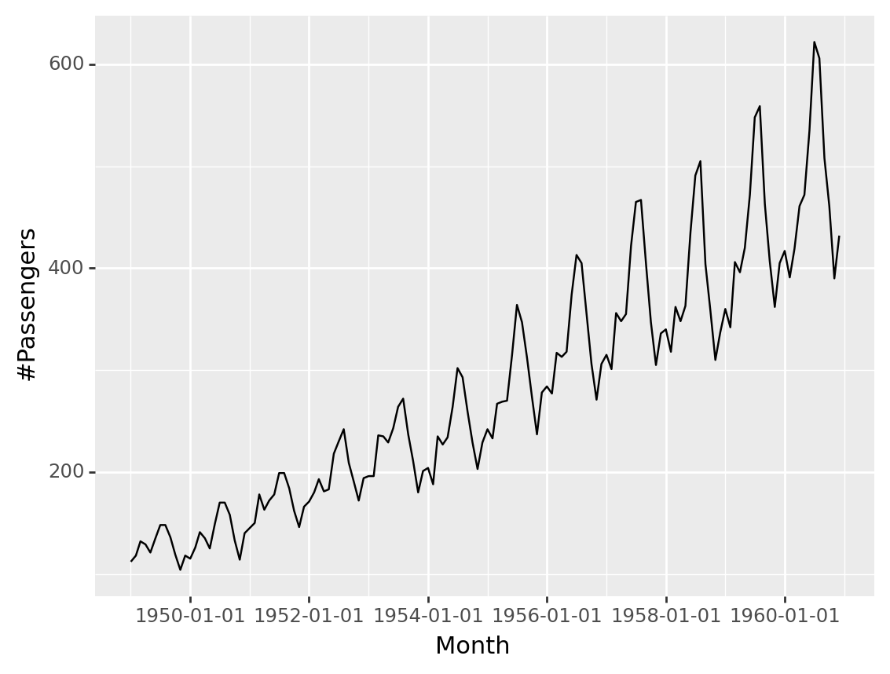

import numpy
import matplotlib.pyplot as plt
mean = 0
std = 1
num_samples = 100
samples = numpy.random.normal(mean, std, size=num_samples)
plt.plot(samples)
plt.show()DSA 554 3.0 Spatio-Temporal Data Analysis
Course outline
Time series
A time series is a sequence of observations taken sequentially in time.
Time series data vs Cross sectional data
Time series data: a set of observations, along with some information about what times those observations were recorded.
Cross sectional data: observations that come from different individuals or groups at a single point in time.
Deterministic vs Non-deterministic time series
Deterministic time series: future values can be exactly determined by using some mathematical function.
Non-deterministic time series: future values can be determined only in terms of a probability distribution.
Stochastic processes
“A statistical phenomenon that evolves in time according to probabilistic laws is called a stochastic process.” (Box, George EP, et al. Time series analysis: forecasting and control.)
Non-deterministic time series or statistical time series
A sample realization from an infinite population of time series that could have been generated by a stochastic process.
Types of methods
Qualitative forecast
Quantitative forecast
Basic steps in a forecasting task
Problem definition
Collect data
Data visualization
Modelling
Evaluate the fitted model
Frequency of a time series: Seasonal periods
Your turn
What are the frequencies for a monthly time series with semi-annual and annual pattern?
Time series patterns
Trend
Long-term increase or decrease in the data.
Seasonal
A seasonal pattern exists when a series is influenced by seasonal factors (e.g., the quarter of the year, the month, or day of the week). Seasonality is always of a fixed and known period. Hence, seasonal time series are sometimes called periodic time series.
Period is unchanging and associated with some aspect of the calendar.
Cyclic
A cyclic pattern exists when data exhibit rises and falls that are not of fixed period. The duration of these fluctuations is usually of at least 2 years. In general,
the average length of cycles is longer than the length of a seasonal pattern.
the magnitude of cycles tends to be more variable than the magnitude of seasonal patterns.


Python
ACF
Random walk
Random walk - ACF
Difference series
df = pd.DataFrame(rw, columns = ['Values'])
df['Lag 1'] = df['Values'].diff()
df['Lag 2'] = df['Values'].diff().diff()
df| Values | Lag 1 | Lag 2 | |
|---|---|---|---|
| 0 | -0.889401 | NaN | NaN |
| 1 | -1.628849 | -0.739448 | NaN |
| 2 | -1.275168 | 0.353681 | 1.093130 |
| 3 | 0.192601 | 1.467769 | 1.114087 |
| 4 | 0.612170 | 0.419568 | -1.048200 |
| ... | ... | ... | ... |
| 95 | -1.353987 | -0.649792 | 0.599198 |
| 96 | 0.102991 | 1.456978 | 2.106770 |
| 97 | 0.823517 | 0.720526 | -0.736453 |
| 98 | 0.817326 | -0.006190 | -0.726716 |
| 99 | 0.442088 | -0.375238 | -0.369048 |
100 rows × 3 columns
Plot Lag 1 series
ACF Lag 1 series
Example 2
import numpy as np, pandas as pd
from statsmodels.graphics.tsaplots import plot_acf, plot_pacf
import matplotlib.pyplot as plt
plt.rcParams.update({'figure.figsize':(9,7), 'figure.dpi':120})
# Import data
df = pd.read_csv('wwwusage.csv', names=['value'], header=0)
# Original Series
fig, axes = plt.subplots(2, 2, sharex=True)
axes[0, 0].plot(df.value); axes[0, 0].set_title('Original Series')
plot_acf(df.value, ax=axes[0, 1], lags=np.arange(len(df)))
# 1st Differencing
axes[1, 0].plot(df.value.diff()); axes[1, 0].set_title('1st Order Differencing')
plot_acf(df.value.diff().dropna(), ax=axes[1, 1], lags=np.arange(len(df) - 1))
plt.show()2nd order differencing
Monthly Airline Passenger Numbers 1949-1960
Monthly Airline Passenger Numbers 1949-1960 - log
Monthly Airline Passenger Numbers 1949-1960 - log

Box-Cox transformation
Box-Cox transformation: Exploring the output
array([ 6.82749005, 6.93282224, 7.16189151, 7.11461078, 6.98378687,
7.20826542, 7.39959794, 7.39959794, 7.22352834, 6.94993188,
6.67930112, 6.93282224, 6.88074148, 7.0663838 , 7.29843847,
7.20826542, 7.05009066, 7.41371485, 7.69297755, 7.69297755,
7.53726005, 7.17744836, 6.86312389, 7.28363955, 7.35675408,
7.42775127, 7.791663 , 7.6033268 , 7.71801394, 7.791663 ,
8.03379957, 8.03379957, 7.86322651, 7.59025293, 7.3711186 ,
7.64214252, 7.70552693, 7.81574285, 7.96693012, 7.82769741,
7.85143867, 8.23478523, 8.35415797, 8.46833738, 8.14152446,
7.94424651, 7.71801394, 7.97819691, 8.00058286, 8.00058286,
8.41186604, 8.40233549, 8.34441554, 8.47763304, 8.66568618,
8.73398286, 8.42136224, 8.16254066, 7.81574285, 8.05570781,
8.08822445, 7.90983871, 8.40233549, 8.32482145, 8.39277032,
8.66568618, 8.97573698, 8.90544371, 8.62209995, 8.34441554,
8.0774311 , 8.34441554, 8.46833738, 8.38317027, 8.69150146,
8.70857469, 8.71707079, 9.07418456, 9.41661628, 9.30252389,
9.05177744, 8.75078932, 8.42136224, 8.78409104, 8.83328615,
8.77580407, 9.08902184, 9.0592668 , 9.0964106 , 9.48162515,
9.72179099, 9.67415098, 9.35679401, 9.00640692, 8.72554012,
9.00640692, 9.07418456, 8.96801544, 9.36350433, 9.30936559,
9.35679401, 9.77445522, 10.01359054, 10.02424732, 9.66813973,
9.30252389, 8.9987716 , 9.22613489, 9.25415593, 9.0964106 ,
9.40343224, 9.30936559, 9.41003199, 9.84886109, 10.14918625,
10.21968352, 9.66813973, 9.38353935, 9.03673716, 9.23316669,
9.390186 , 9.26806127, 9.68014959, 9.61958794, 9.76283534,
10.05072014, 10.426264 , 10.4768849 , 10.00289463, 9.68613564,
9.40343224, 9.67415098, 9.74531682, 9.58881702, 9.75700771,
9.99215929, 10.05072014, 10.36531089, 10.75145254, 10.68404894,
10.23457308, 9.99215929, 9.58262264, 9.83186035])Step 1: Plot data
Detect unusual observations in the data
Detect non-stationarity by visual inspections of plots
Stationary series:
has a constant mean value and fluctuates around the mean.
constant variance.
no pattern predictable in the long-term.
(<Figure size 1920x480 with 1 Axes>,
<AxesSubplot: ylabel='Number of airline passengers'>)Step 2: Split time series into training and test
Specify the forecast horizon
import numpy as np
import pandas as pd
from sktime.forecasting.base import ForecastingHorizon
fh = ForecastingHorizon(
pd.PeriodIndex(pd.date_range("1960-01", periods=12, freq="M")), is_relative=False
)
fhForecastingHorizon(['1960-01', '1960-02', '1960-03', '1960-04', '1960-05', '1960-06',
'1960-07', '1960-08', '1960-09', '1960-10', '1960-11', '1960-12'],
dtype='period[M]', is_relative=False)Plot training and test series
(<Figure size 1920x480 with 1 Axes>,
<AxesSubplot: ylabel='Number of airline passengers'>)Need transformations?
Need differencing?
Step 3: Apply transformations
(<Figure size 1920x480 with 1 Axes>,
<AxesSubplot: ylabel='Number of airline passengers'>)
Step 4: Take difference series
Identifying non-stationarity by looking at plots
Time series plot
The ACF of stationary data drops to zero relatively quickly.
The ACF of non-stationary data decreases slowly.
For non-stationary data, the value of \(r_1\) is often large and positive.
Non-seasonal differencing and seasonal differencing
Non seasonal first-order differencing: \(Y'_t=Y_t - Y_{t-1}\)
Non seasonal second-order differencing: \(Y''_t=Y'_t - Y'_{t-1}\)
Seasonal differencing: \(Y_t - Y_{t-m}\)
- For monthly, \(m=12\), for quarterly, \(m=4\).
- Seasonally differenced series will have \(T-m\) observations.
There are times differencing once is not enough. However, in practice,it is almost never necessary to go beyond second-order differencing.
ACF of log-transformation series

Take seasonal difference series
1949-01 NaN
1949-02 NaN
1949-03 NaN
1949-04 NaN
1949-05 NaN
...
1959-08 0.101591
1959-09 0.136312
1959-10 0.125491
1959-11 0.155072
1959-12 0.183804
Freq: M, Name: Number of airline passengers, Length: 132, dtype: float64Take seasonal difference series (cont.)
1949-01 NaN
1949-02 NaN
1949-03 NaN
1949-04 NaN
1949-05 NaN
1949-06 NaN
1949-07 NaN
1949-08 NaN
1949-09 NaN
1949-10 NaN
1949-11 NaN
1949-12 NaN
1950-01 0.026433
1950-02 0.065597
1950-03 0.065958
1950-04 0.045462
1950-05 0.032523
1950-06 0.098672
1950-07 0.138586
1950-08 0.138586
Freq: M, Name: Number of airline passengers, dtype: float64ACF - diff(log(data), 12)
ACF - First differencing on diff(log(data), 12)
PACF - First differencing on diff(log(data), 12)
Testing for nonstationarity for the presence of unit roots
Dickey and Fuller (DF) test
Augmented DF test
Phillips and Perron (PP) nonparametric test
Kwiatkowski-Phillips-Schmidt-Shin (KPSS) test
KPSS test
H0: Series is level or trend stationary.
H1: Series is not stationary.
KPSS test
from statsmodels.tsa.stattools import kpss
def kpss_test(series, **kw):
statistic, p_value, n_lags, critical_values = kpss(series, **kw)
# Format Output
print(f'KPSS Statistic: {statistic}')
print(f'p-value: {p_value}')
print(f'num lags: {n_lags}')
print('Critial Values:')
for key, value in critical_values.items():
print(f' {key} : {value}')
print(f'Result: The series is {"not " if p_value < 0.05 else ""}stationary')
kpss_test(y_train.naturallog)KPSS Statistic: 1.9204939010623039
p-value: 0.01
num lags: 6
Critial Values:
10% : 0.347
5% : 0.463
2.5% : 0.574
1% : 0.739
Result: The series is not stationaryKPSS test
KPSS Statistic: 0.29885781439314946
p-value: 0.1
num lags: 5
Critial Values:
10% : 0.347
5% : 0.463
2.5% : 0.574
1% : 0.739
Result: The series is stationaryKPSS test
KPSS test may not necessarily reject the null hypothesis (that the series is level or trend stationary) even if a series is steadily increasing or decreasing.
The word ‘deterministic’ implies the slope of the trend in the series does not change permanently. That is, even if the series goes through a shock, it tends to regain its original path.
source: https://www.machinelearningplus.com/time-series/kpss-test-for-stationarity/
KPSS test
By default, it tests for stationarity around a ‘mean’ only.
To turn ON the stationarity testing around a trend, you need to explicitly pass the regression=‘ct’ parameter to the kpss
KPSS Statistic: 0.0760056301424143
p-value: 0.1
num lags: 5
Critial Values:
10% : 0.119
5% : 0.146
2.5% : 0.176
1% : 0.216
Result: The series is stationaryADF test
from statsmodels.tsa.stattools import adfuller
def adf_test(series):
result = adfuller(series, autolag='AIC')
print(f'ADF Statistic: {result[0]}')
print(f'p-value: {result[1]}')
for key, value in result[4].items():
print('Critial Values:')
print(f' {key}, {value}')
series = df.loc[:, 'value'].valuesH0: Series is not stationary
H1: Series is stationary
ADF test
ADF Statistic: -1.3176112021439967
p-value: 0.6210771494355872
Critial Values:
1%, -3.4870216863700767
Critial Values:
5%, -2.8863625166643136
Critial Values:
10%, -2.580009026141913ADF Statistic: -2.5844902417566793
p-value: 0.09624537566648711
Critial Values:
1%, -3.492995948509562
Critial Values:
5%, -2.888954648057252
Critial Values:
10%, -2.58139291903223KPSS vs ADF test
If a series is stationary according to the KPSS test by setting regression=‘ct’ and is not stationary according to the ADF test, it means the series is stationary around a deterministic trend.
Further reading:
Kwiatkowski, D.; Phillips, P. C. B.; Schmidt, P.; Shin, Y. (1992). Testing the null hypothesis of stationarity against the alternative of a unit root. Journal of Econometrics, 54 (1-3): 159-178.
Step 5: Examine the ACF/PACF to identify a suitable model
AR(p)
ACF dies out in an exponential or damped sine-wave manner.
there is a significant spike at lag \(p\) in PACF, but none beyond \(p\).
MA(q)
ACF has all zero spikes beyond the \(q^{th}\) spike.
PACF dies out in an exponential or damped sine-wave manner.
Seasonal components
- The seasonal part of an AR or MA model will be seen in the seasonal lags of the PACF and ACF.
ARIMA(0,0,0)(0,0,1)12 will show
a spike at lag 12 in the ACF but no other significant spikes.
The PACF will show exponential decay in the seasonal lags 12, 24, 36, . . . .
ARIMA(0,0,0)(1,0,0)12 will show
exponential decay in the seasonal lags of the ACF.
a single significant spike at lag 12 in the PACF.
Step 5: Examine the ACF/PACF to identify a suitable model (cont.)
\(d=1\) and \(D=1\) (from step 4)
Significant spike at lag 1 in ACF suggests non-seasonal MA(1) component.
Significant spike at lag 12 in ACF suggests seasonal MA(1) component.
Initial candidate model: \(ARIMA(0,1,1)(0,1,1)_{12}\).
By analogous logic applied to the PACF, we could also have started with \(ARIMA(1,1,0)(1,1,0)_{12}\).
Models
Initial model:
\(ARIMA(0,1,1)(0,1,1)_{12}\)
\(ARIMA(1,1,0)(1,1,0)_{12}\)
Try some variations of the initial model:
\(ARIMA(0,1,1)(1,1,1)_{12}\)
\(ARIMA(1,1,1)(1,1,0)_{12}\)
\(ARIMA(1,1,1)(1,1,1)_{12}\)
Try some variations
Both the ACF and PACF show significant spikes at lag 3, and almost significant spikes at lag 3, indicating that some additional non-seasonal terms need to be included in the model.
\(ARIMA(3,1,1)(1,1,1)_{12}\)
\(ARIMA(1,1,3)(1,1,1)_{12}\)
\(ARIMA(3,1,3)(1,1,1)_{12}\)
Fitting ARIMA models
from sktime.forecasting.arima import ARIMA
forecaster1 = ARIMA(
order=(1, 1, 0),
seasonal_order=(1, 1, 0, 12),
suppress_warnings=True)
forecaster1.fit(y_train.naturallog) ARIMA(order=(1, 1, 0), seasonal_order=(1, 1, 0, 12), suppress_warnings=True)In a Jupyter environment, please rerun this cell to show the HTML representation or trust the notebook.
On GitHub, the HTML representation is unable to render, please try loading this page with nbviewer.org.
ARIMA(order=(1, 1, 0), seasonal_order=(1, 1, 0, 12), suppress_warnings=True)
Step 6: Check residual series
fhtrain = ForecastingHorizon(
pd.PeriodIndex(pd.period_range(start='1949-01', end='1959-12', freq='M')), is_relative=False
)
fhtrainForecastingHorizon(['1949-01', '1949-02', '1949-03', '1949-04', '1949-05', '1949-06',
'1949-07', '1949-08', '1949-09', '1949-10',
...
'1959-03', '1959-04', '1959-05', '1959-06', '1959-07', '1959-08',
'1959-09', '1959-10', '1959-11', '1959-12'],
dtype='period[M]', length=132, is_relative=False)Obtain predictions for the training period
Obtain residual series
Plot residuals
Plot residuals (cont.)

Plot residuals (cont.)

Your turn: remove the outlier and draw the histogram
Ljung-Box Test
H0: Residuals are not serially correlated.
H1: Residuals are serially correlated.
| lb_stat | lb_pvalue | |
|---|---|---|
| 20 | 3.984776 | 0.999955 |
Step 7: Generate forecasts
Back transformation
Plot training, test, and forecasts
Evaluation
Your Turn
Fit other variants of ARIMA models and identify the best ARIMA model for the series.
Modelling steps
Plot the data.
If necessary, transform the data (using a Box-Cox transformation) to stabilise the variance.
If the data are non-stationary, take first differences of the data until the data are stationary.
Examine the ACF/PACF to identify a suitable model.
Try your chosen model(s), and use the AICc to search for a better model.
Modelling steps (cont.)
Check the residuals from your chosen model by plotting the ACF of the residuals, and doing a portmanteau test of the residuals. If they do not look like white noise, try a modified model.
Once the residuals look like white noise, calculate forecasts.
Source: Forecasting: Principles and Practice, Rob J Hyndman and George Athanasopoulos